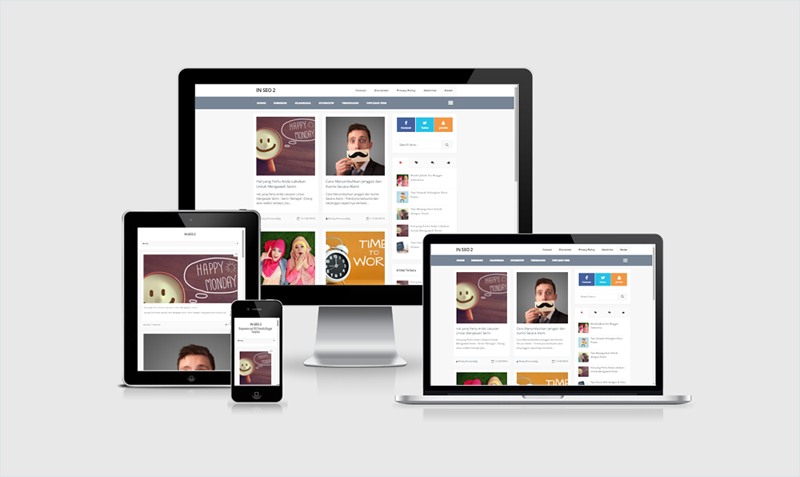
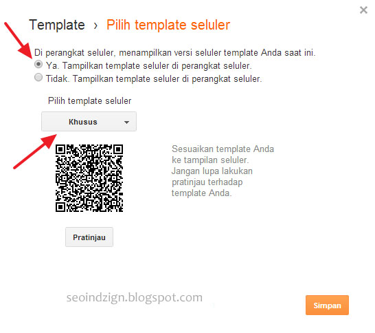

Info Template
In SEO 2 adalah template Blogger dengan layout Responsive dan cocok untuk semua blog. Dengan desain yang memiliki kombinasi warna yang sederhana, terlihat bersih dan modern, SEO Optimized, dan telah dibuat dengan menggunakan beberapa trend desain saat ini.
Fitur
Silakan buka Blogger > Tata Letak > Buka widget Pages menu-navigasi
Kemudian Tambahkan link post statis yang telah Anda buat sebelumnya
Masuk ke Dashboard blog > Template > Klik icon “Gear” di bawah preview template seluler > dan pilih “Ya. Tampilkan template seluler di perangkat seluler.“ > pada menu dropdown pilih “Khusus” > Simpan

Cari dan ganti semua kode xxxxx dengan kode tulisan Anda
Untuk masalah SEO pada template ini sudah saya setting semaksimal mungkin sesuai dengan apa yang saya bisa. Anda tidak perlu melakukan modifikasi apapun pada template ini, jika belum merasa puas silakan Anda modifikasi lagi tapi JANGAN MENGHAPUS LINK KREDIT PEMBUAT TEMPLATE OKE.
Untuk setingan selanjutnya silakan buka link ini In SEO 2 Responsive and SEO Friendly Blogger Template
Nama : Indzign
Blog : Indzign